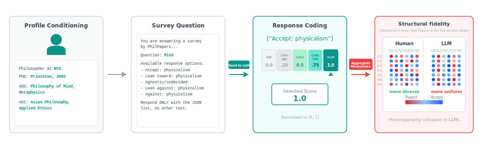
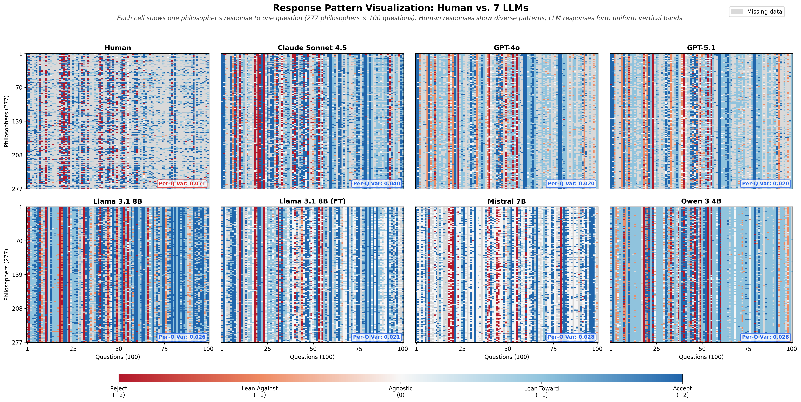

Abstract
Silicon sampling—using large language models (LLMs) to simulate human responses—has emerged as a promising tool for social science research. However, we show that in the alignment-relevant domain of philosophy, silicon samples systematically collapse heterogeneity.
Using data from N=277 professional philosophers and evaluating seven LLMs, we find that language models:
- Produce 1.4–2.4× lower variance than human philosophers
- Over-correlate philosophical judgments, creating artificial consensus
- Exhibit spurious specialist effects, assuming domain experts hold stereotypically aligned views
- Organize disagreement along fundamentally different axes than humans
These findings suggest current LLMs may be unsuitable for value elicitation or alignment applications requiring faithful representation of philosophical diversity.
Silicon Sampling Workflow
Figure 1: Silicon sampling workflow illustrated through four stages: (1) Profile conditioning with philosopher demographics, (2) Survey question presentation, (3) Response coding to normalized scores, and (4) Structural fidelity analysis showing LLM responses have less heterogeneity than human responses.
Methodology

Five-Stage Experimental Pipeline
- Data Sources: 277 philosopher profiles from PhilPeople.org with demographics and specializations
- Data Collection: Web scraping using Selenium to extract survey responses from PhilPapers
- Data Processing: Merging profiles with responses, normalizing to [0,1] scale
- LLM Evaluation: Testing 7 models (commercial + open-source) with DPO fine-tuning
- Analysis: Entropy, KL-divergence, PCA, correlation structure, and demographic prediction
Key Findings
1. Heterogeneity Collapse
LLMs show 1.6-3.0× lower within-group variance than humans across 64 exact-match philosophical questions.
Based on ultra-conservative comparison using only questions with exact string matches across all 8 datasets (Human + 7 LLMs), including 12 clean binary pairs with position inversion.
2. Response Pattern Visualization (8-Panel Comparison from Appendix)
[Download PDF] Visual comparison showing how humans and seven LLMs respond across all questions.
3. Model Hedging Behavior
GPT-4o, GPT-5.1, and Qwen 3 4B exhibit extreme hedging:
- Humans: 44.8% Accept, 41.6% Lean toward → balanced confidence
- GPT-4o/5.1: ~4.5% Accept, ~78% Lean toward → 20× more hedging
- Qwen 3 4B: 2.2% Accept, 76.3% Lean toward → extreme caution
All models received identical prompts. This hedging pattern reflects RLHF/safety training, not data quality issues. It contributes to variance collapse by clustering responses around "lean toward" (0.75) rather than spreading across strong positions.
Interactive Data Exploration
Explore the quantitative evidence of heterogeneity collapse across models and philosophical domains.
Per-Question Response Distribution
Select a philosophical question to see the statistical distribution across Human and all 7 LLMs.
This visualization shows:
- Number above each column: Sample size (total philosophers who answered this question)
- Box (colored rectangle): Interquartile range (IQR) - middle 50% of responses from 25th percentile (Q1, bottom) to 75th percentile (Q3, top)
- Line inside box: Median (50th percentile, Q2)
- Whiskers (vertical lines): Extend to minimum (bottom) and maximum (top) values
- Gold diamond (◆): Mean (average) response. Hover over this icon to see the total sample size also.
- Colors: Red = Human philosophers (wider spread = genuine disagreement), Blue = LLMs (narrow spread = artificial consensus)
Per-Question Variance Across Models
Compare how much disagreement (variance) each model produces per question. Human philosophers show 0.062 variance; all LLMs show dramatically lower values (0.026-0.043).
Domain-Level Heterogeneity Heatmap
Explore variance across 14 philosophical domains. Darker colors indicate higher disagreement. Hover over cells to see exact values.
Spurious Specialist Effects
LLMs systematically predict that domain specialists will hold stereotypically aligned philosophical views, far exceeding what ground truth shows:
| Specialist Effect | Ground Truth (N=277) |
GT Sig | LLM Avg Prediction |
Significant Models |
|---|---|---|---|---|
| Phil. Biology → Personal identity: biological | +11.4 pp | n.s. | +43 pp | 4/7*** |
| Phil. Biology → Personal identity: psychological | +4.1 pp | n.s. | -65.7 pp | 3/7*** |
| Ancient Phil. → Practical reason: Aristotelian | +1.9 pp | n.s. | +68.9 pp | 7/7*** |
Note: ***p<0.001 for LLM predictions (χ² tests). Ground truth shows no significant effects, but LLMs predict highly significant associations—suggesting demographic labels serve as "high-precision anchors" for stereotypical stances rather than capturing nuanced expert disagreement.
Implications for AI Alignment
🎯 No Expert Consensus
Professional philosophers exhibit substantial disagreement on fundamental questions. There is no unified "expert consensus" for alignment to converge upon.
⚠️ Artificial Consensus
LLMs collapse genuine philosophical disagreement into artificial consensus, potentially imposing uniform values where diversity should exist.
🔍 Wrong Dimensions
LLMs organize disagreement along fundamentally different axes than humans, suggesting they misunderstand the structure of philosophical worldviews.
📊 Unsuitable for Value Elicitation
Current LLMs may be inappropriate for value alignment applications requiring faithful representation of philosophical diversity and expert disagreement.
About This Work
📄 Paper Status
This paper is currently under review. For access to the full paper, please contact the authors directly.
🎓 Course Project Extension
This research originated as a course project for CS329H: Human-Centered Natural Language Processing, taught during Fall Quarter 2025 at Stanford University. The project has been extended into a full research paper exploring the fundamental limitations of silicon sampling in expert domains.
💡 How to Cite
As this work is under review, please contact the authors for citation information. A BibTeX entry will be provided upon publication.
Contact & Collaboration
For questions or collaboration inquiries, please contact:
- Yuanming Shi (Adobe Inc.): jeremyshi@adobe.com
- Andreas Haupt (Stanford University): h4upt@stanford.edu | Website